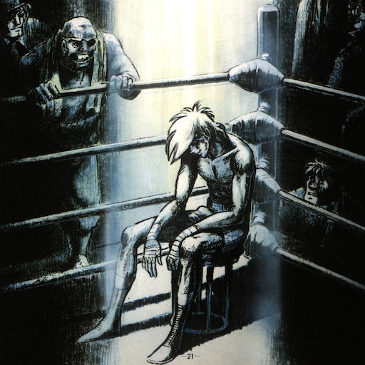

home
categories
tags
rss
tokisuno – [toʊkiːsuːnoʊ]
he/him // 23

2025/11/05
Toki Talks - BIG TOKISUNO W
2025/10/07
Toki Talks - Relapsed on CS2 Again/I hate humidity
2025/09/16
Toki Talks - Personal Goals & Gaming
2025/09/11
Toki Talks - Throwaway
2025/09/02
Toki Talks - Becoming the person I want to be
2025/08/26
Toki Talks - I abandoned AwesomeWM…
2025/08/19
Toki Talks - Obscure YouTubers I Remember
2025/08/14
Toki Talks - Distracted by novel ideas
2025/08/10
No video for this week
2025/08/04
Toki Talks - Time commitment into things that matter
2025/07/31
Toki Talks - Identity and commitment
2025/07/23
Toki Talks - What to do with streaming…
2025/07/15
Toki Talks - Taking my life back into my own hands
2025/07/10
Toki Talks - Rebounding from hardship
2025/07/01
Toki Talks - Happy Canada Day!
2025/06/11
Mid-year life update/dump! (2025年)
2025/05/07
I’m going back to JavaScript
2025/04/25
I moved to Fedora + I moved back to Alacritty
2025/04/07
My short experince with learning Esperanto
2025/03/27
2 Weeks of Esperanto
2025/03/17
Making content is hard, but it didn’t used to be.
2025/02/18
I moved back to Tmux + Kitty
2025/02/16
I have Crohn’s Disease
2025/02/09
Happy 2025 ~ I already switched off DWM
2024/11/11
My Reading Goals – Update!
2024/09/24
Byebye JavaScript, Hello Ruby
2024/08/20
Short rant about myself and content creation
2024/07/01
Announcement: Changes for the future
2024/05/25
ADHD & the bloat of “productivity tools”
2024/05/22
Avoiding clocks • Obsession with Numbers
2024/05/11
3 Daily Habits for 2024
2024/05/08
Integrating Zotero with Telescope.nvim
2024/05/03
Why I don’t upload much
2024/04/26
Living with OCD
2024/04/19
It’s never the right tool for the job
2024/04/18
Confidence in my major
2024/03/09
Whoops
2024/01/14
Weekly Blog Posts + OCD
2024/01/03
New Year Resolutions
2023/07/31
Friends
2023/06/22
Bloat
2023/05/27
Scattered Life
2023/05/21
My Not-So-Unique Experience with Focus
2023/05/05
Motivation
2023/04/29
Welcome